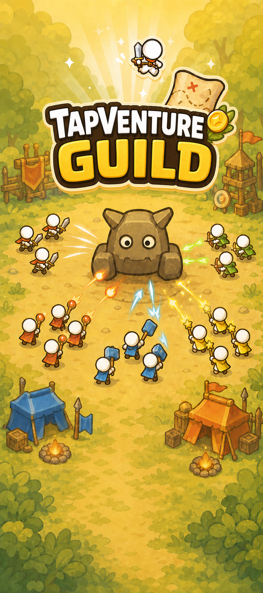
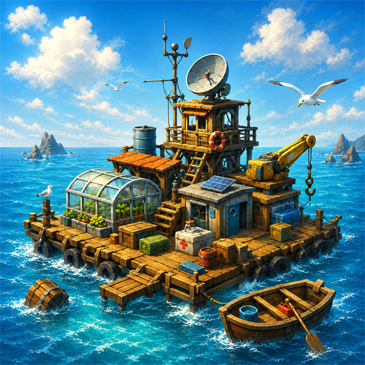

Idle party RPG
Tapventure Guild
Independent game studio · 独立游戏工作室
We create focused mobile games about growth, discovery, and finding a way forward— from gathering a fearless guild to walking the path of cultivation and building a refuge across an endless sea.
把微小的灵感，做成长久陪伴的世界。



Our games · 游戏作品
Different settings, the same careful focus: satisfying progression, clear choices, and worlds that keep unfolding one session at a time.
Gather your guild. Adventure never stops.
Recruit five distinct classes, shape a powerful party, and take on an ever-growing journey of bosses, relics, expeditions, and rebirth—even while you are away.
Privacy policy
Forge a path beyond mortality.
Awaken rare talents, cultivate a relentless hero, and challenge the darkness. Every return brings new strength—and another step toward ascension.
Privacy policyBuild a home where no land remains.
Gather what the ocean gives you, expand a fragile raft into a thriving refuge, and guide your survivors through the uncertainty of the open sea.
Privacy policyThe studio · 关于我们
Starlet River Game Studio（江辰游戏）is an independent game studio creating approachable worlds with depth, atmosphere, and a strong sense of progress.
Each action should move the player forward and make the next return worthwhile.
Distinct art, atmosphere, and stories give every game a place of its own.
We listen, iterate, and keep improving the experience long after the first build.
Contact · 联系我们
For publishing, collaboration, support, or player feedback, send us a message.